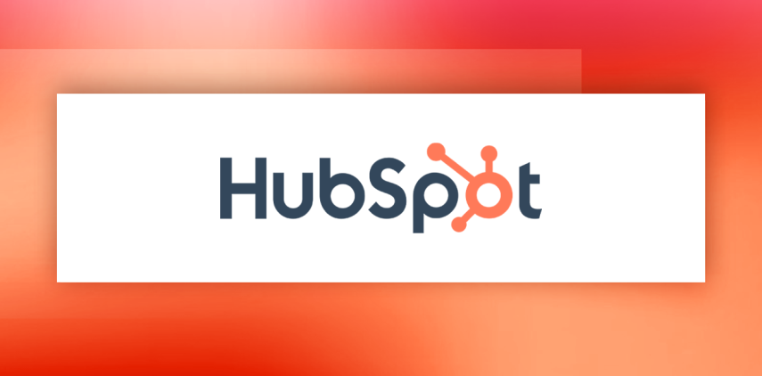

Best Project Management Software
James McGill | Updated on December 12th 2024Privacy and Technology Consultant In a hurry? Here’s the top Project Management Software for 2025:
The Best Project Management Software 2025
Doesn’t it feel like there are never enough hours in the day? This is never more true than for those involved in project management. The seemingly endless sea of moving parts, the post-it notes, the spreadsheets, and the relentless files can feel overwhelming at the best of times. For many, though the new hybrid-work style has wrought considerable benefits in terms of individual freedom, it has only exasperated the stress of working efficiently as a team.
Even if you are in the office, it can be a serious challenge to coordinate across divisions, divide workload evenly, track progress, and share resources, all while coming in on budget and on time. Efficient management is one of the most critical factors that can ultimately lead to the success - or failure - of a project. Ineffective management can result in:
- Dissatisfied clients
- Wasted resources
- Inefficient task allocation
- Confusion amongst employees
- Protracted timelines
- Ballooning budgets
- Misplacement of essential files
- Reputational damage
With so much riding on effective project management, it should come as no surprise that PWC found that 77% of all top-performing projects use project management software to support and streamline their role. What is perhaps more surprising then, is that only one in 4 organizations incorporate project management software into their regular approach.
Instead, many outdated companies opt for a mismatch of excel spreadsheets, paper, and disjointed tools. Little wonder then that project mismanagement still results in 12% of wasted investment in the US. That’s $120M for every $1B spent gone to poor project management.
An overview of the best Project Management Software for 2025:
- 🥇 1. Monday — Monday.com provides flexible, scalable, and cost-effective project management software to more than 200,000 customers, ranging from startups to large enterprises. It boasts a visually appealing interface and simplifies project management, removing the necessity for spreadsheets and manual tracking.
- 🥈 2. Clickup — With a free plan that includes unlimited users and an affordable initial paid option, ClickUp is among our top picks for teams with limited budgets.
- 🥉 3. Hubspot — With over 1000 integrations, advanced analytics, and a user-friendly interface, Hubspot is a standout option for those in need of a reliable, all-in-one project management solution. Give it a try for yourself by clicking the link below for a 14-day risk-free trial!
- Frequently Asked Questions about Project Management Software (FAQ).
What is Project Management Software? How can it help me?
Project management software is everything you need in a single place. The industry’s leading software will take all those separate elements that are so important to a project's success (but so easy to lose track of) and integrate them all into a single, user-friendly interface. Task allocation, progress and resource tracking, budget, reporting, collaboration, and essential files, are all just a click away for anybody who needs them.
Let’s take a closer look at some of the ways project management software can help you:
Task management - With a top-down view of every essential employee (across every team) at your disposal you can see who’s doing what and how they are progressing. This allows for optimized task allocation and ensures nobody is caught feeling overwhelmed or underutilized.Communication - Many project management systems feature advanced communication options allowing individuals to chat, leave comments, schedule, and attend meetings, all within a single interface. For hybrid working, this is an indispensable feature.Budget management - Accurate time tracking allows a project manager to control costs effectively and trim the budget if it is being inefficiently utilized. The best software even has predictive capabilities, allowing for budget estimations far in advance. If you handle multiple clients, automated billing can free up time to spend on what really matters - supporting your team.Document collation - Did I leave that file on my work or home computer? Does everyone have the required access? What files am I going to need down the line? By keeping all your essential documents and files in one place there is no need to waste time hunting for them and efficiency can be ensured.Advanced reporting - It is always easier to rectify a problem when you can see its root cause. Real-time reports are collated for everything from financial allocation to individual performances and are instantly shareable.With the huge benefits of project management software in mind, let's take a look at the three best offerings for 2025:
1. Monday — Best For Collaboration

Monday.com has everything you need and more in a project management tool. You can use this cloud-based project management tool to create and customize workflows, collaborate with team members in real-time, assign tasks, set due dates, track progress, and more. In addition, the platform provides visual reports and analytics to assist you in gaining insights into project performance and identifying areas for improvement. Monday.com also has a plethora of integrations, including Slack, Microsoft Teams, Zoom, Google Drive, Dropbox, Asana, Trello, QuickBooks, Shopify, and many others. They also work with popular time-tracking apps such as Clockify, Timely, Toggl, and Harvest so teams can keep track of how much time they’re spending on different tasks and projects. Monday.com has over 50 integrations, so you can pretty much turn your Monday.com dashboard into your personal work hub.
Monday.com is an excellent project management tool that offers both manual flexibility and automation. You can customize and automate everything with ease, whether you're using it to track weekly to-dos or manage more complex, ongoing projects. Monday.com's approach is anything but "one size fits all," as its boards are entirely customizable to meet your team's specific needs. By setting routines and letting the app handle the rest, you can streamline project management without using spreadsheets or manual tracking. You can even color-code and label tasks according to priority (red for urgent tasks, yellow for those in progress, you get the drift.). Tired eyes? Go ahead and switch to dark or night mode. Additionally, Monday.com provides tutorials to help users navigate intricate features such as integrations, plugins, and workflow automation, making it an excellent choice even for those new to project management tools.
Overall, we are very impressed with how adaptable Monday's project management tool is. It's an excellent choice for project management by sales teams and others thanks to its reasonable price and extensive features on some of its plans. Visit our link below to test it out for 14 days!
Get Monday - The Leading Project Management Software!
2. Clickup — Budget-Friendly Team Collaboration

If your team needs a versatile project management tool, whether you use Agile methods or not, ClickUp is a great choice. It has lots of tools you can adjust to fit your project's needs and keep track of progress, so you can allocate resources accurately.
One standout feature that sets ClickUp apart is its Chat view feature. Similar to popular messaging platforms like Microsoft Teams or Slack, it enables you and your team to communicate in real-time, discuss project updates, share files, and address issues seamlessly, all without having to leave the project management environment. By centralizing communication within ClickUp, you can stay focused and organized, minimizing distractions and boosting overall efficiency.
Although ClickUp might seem overwhelming at first glance, you'll quickly discover that it becomes much more user-friendly once you input your basic task data. The platform takes the initiative to fill in various project views for you, significantly reducing the setup process. Task management also becomes a breeze with the help of AI assistance, which generates task descriptions and sub-tasks, resulting in smoother workflows. Moreover, ClickUp University offers tailored learning paths designed for different skill levels, providing personalized support to help you navigate the learning curve and master the platform with confidence.
Considering ClickUp's extensive features and user-friendly interface, it's no wonder it stands out as a top choice for teams in need of efficient project management. However, what truly distinguishes ClickUp is its remarkable combination of flexibility and affordability, making it the best budget collaboration tool available. Unlike its competitors, ClickUp ensures that all users, regardless of their budget constraints, have access to the majority of its features across all pricing tiers. With no user limit on the free plan and an affordable initial paid plan, ClickUp offers unmatched value for individuals or smaller teams seeking cost-effective project management software.
Get Clickup - The Leading Project Management Software!
3. Hubspot — All-Inclusive CRM with Simplified Project Management Tools

HubSpot's platform consists of six main products: marketing, sales, customer service, content management, operations, and commerce. Within this software is Projects, a straightforward project management tool that cuts out unnecessary features, focusing solely on what's essential to get your work done. You have the ability to establish multiple projects, oversee team members, create numerous tasks, and delegate them to anyone within your team.
As your needs grow, this is where Hubspot really shines. Since it’s integrated into a comprehensive marketing tool, you'll gain access to more than just basic project management functionalities. You'll have the ability to collect contact information using forms, maintain lead engagement through email marketing, deliver targeted messages via landing pages, and enhance interaction with website visitors through live chat. If you find a particular feature missing, like a Gantt chart, you can conveniently find it in HubSpot's App Marketplace, which boasts over 1,500 apps.
It's also quite simple to get started with HubSpot Projects, which is unlike many other complicated project management tools. Even if you're not tech-savvy, you can easily grasp its basic list feature. Team members can quickly adapt, especially with the drag-and-drop feature that makes organizing tasks and projects a breeze. Though there are many different plans and choices, you can start with the free plan to see how HubSpot helps you. Then, as you need more, it's easy to upgrade and get extra features.
HubSpot's attempt to incorporate project management within its CRM ecosystem offers a compelling option for businesses seeking to streamline their workflows. While it may not offer the extensive features and customization options found in dedicated project management software, HubSpot shines with its user-friendly interface, effortless integration with various business tools, and a diverse range of plans tailored to meet the needs of different teams. Its focus on tasks, team member assignments, projects, and templates also makes it ideal for solopreneurs, startups, and small marketing teams without dedicated project managers.
Get Hubspot - The Leading Project Management Software!
How we chose the best Project Management Tools for 2025
Whether you're a team of 15, 30, or 500, using the right project management tool can make work life easier for everyone involved. But where do you even begin with so many project management apps in the market? As a team who regularly juggles people and projects, we're definitely not new to using these tools. Here's what we looked at when shortlisting brands for this year's Top 10 list:
- Task management
- Scheduling and planning
- Monitoring and reporting
- Time tracking/Timesheets
- Budgeting and Communication
- Resource management
- Dashboards and Integration
- Security
- Support
Project Management Software - Frequently Asked Questions (FAQ)
📎 Can project management software be integrated with existing software?
Many project management systems offer comprehensive integration with 3rd party software. One of the biggest selling points of these systems is that they allow complete project management from a single interface. As such, emails and other communication platforms such as Slack, accounting software, CRMs, and more can typically be integrated into a project management system.
🔒 Is data safe with project management software?
As many of the top project management systems are regularly adopted by Fortune100 companies, the need for advanced data protection is high. That’s why a trusted industry name is so important. Many companies are ISO certified, as well as holding the EU-US privacy shield for exchanges of personal data, amongst other certifications. As always, it is important all employees practice sound data-privacy measures informed by comprehensive training.
📜 Is there a learning curve involved?
As with any new software, a teething period of some degree is likely to occur. The basic features of project management software are often pretty simple to get the hang of. For more advanced features, it may take a little longer for the whole team to get their head around. However, the huge benefit is that this may be the only software you need ever use. Having everything all in one place eliminates the need to understand all manner of different programs, increasing efficiency both in terms of project management and ongoing training.
💰 What is the cost of project management software?
Cost can vary greatly between project management systems. The largest variables are typically the size of your team and the advanced features you wish to include. As a project manager, it is important to factor in the cost of any new system and ensure the budget is sensible. Fortunately - provided the system is suitable for the size and requirements of your team - the price is likely to be entirely offset by the increase in productivity and project success rate. Remember, 12% of a budget is wasted on management inefficiency on average, a number set to be greatly reduced by the right project management software.
Transparency and Trust: The aim of this website is to help you find the perfect software for your needs in an easy-to-view comparison list. You can read more about how we review and about our background in the About Us section of this website. Software.fish does not feature all of the software available in the market, we cherry-pick what we consider to be the leaders in each vertical. We try to keep this site updated and fresh, but cannot guarantee the accuracy of the information as well as the prices featured at all times. All prices quoted on this site are based on USD so there could be slight discrepancies due to currency fluctuations. Although the site is free to use, we do earn commissions from the software companies that we have partnered with. If you click on one of our links and then make a purchase, we will get paid by that company. This has an impact on the ranking, score, and order in which the software is presented in our list and elsewhere throughout the site. Software listings on this page DO NOT imply endorsement.